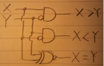
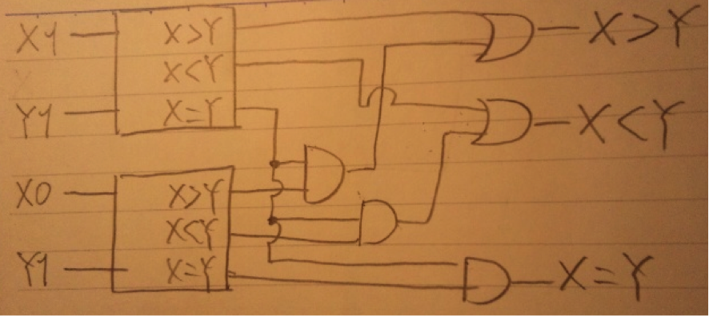
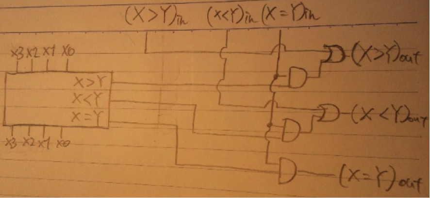

F2 = F0 + F1 = 0 + 1 = 1
F3 = F1 + F2 = 1 + 1 = 2
F4 = F2 + F3 = 1 + 2 = 3
より、
F5 = F3 + F4 = 2 + 3 = 5
C(fib1(n)) で fib1(n) の計算量を表すものとする。
fib1(0) は比較が1回だけなので C(fib1(0)) = 1
fib1(1) は比較が2回だけなので C(fib1(1)) = 2
n > 1 ならば fig1(n) は比較2回，メソッド呼び出し2回，演算1回の5回となるので、
C(fib1(n)) = C(fib1(n-1)) + C(fib1(n-2)) + 5
が成り立つ。
この方程式を解くと
C(fib1(n)) = ((1 + sqrt(5)) / 2) C(fib1(n-1))
なる。ここで，sqrt(5) は 5 の平方根を表すものとする。
故に，
C(fib1(n)) = ((1 + sqrt(5)) / 2)^(n-1) * 2
となり，fib1(n) の計算量はO((1 + sqrt(5)) / 2)^(n-1))
積み上げ式ではO(n)で計算可能。
int fib(int n){
if(n==0)return 0;
if(n==1)return 1;
int tmpA = 0 , tmpB = 1 , total=0;
for(int i=2;i<=n;i++){
total = tmpA+tmpB;
tmpA = tmpB;
tmpB = total;
}
return total;
}
末尾再帰関数に変えてもO(n)
行列を用いるとO(log n)で解くことが可能。
高速かつ大容量の記憶装置を作ることは困難であるが、高速だが小容量、低速だが大容量の記憶装置を作ることは容易である。この逆の特徴を持ったそれぞれの記憶装置を組み合わせることで、実質的に高速で大容量の記憶装置を作ることが可能であることから用いられている。一般的にプロセッサに近いほど高速で小容量。遠いほど低速で大容量となっている。
メモリにアクセスする度に低速大容量の記憶装置にアクセスしたのでは効率が悪い。そこで、よく使うデータは高速小容量の記憶装置においておき、普段はそちらをアクセスすることでアクセス時間を減らすことが可能。
1次キャッシュ(C1)： 1 * 10^-9 s ヒット率：85％ ミス率：15％
2次キャッシュ(C2)：10 * 10^-9 s ヒット率：90％ ミス率：10％
主記憶(M)：70 * 10^-9 s ヒット率：95％ ミス率：5％
HDD(H)：1 * 10^-3 s
・平均アクセス時間
( 0.85 * C1 ) //C1ヒット
+( 0.15 * 0.90 * C2) //C1ミス、C2ヒット
+( 0.15 * 0.10 * 0.95 * M ) //C1 , C2 ミス、Mヒット
+( 0.15 * 0.10 * 0.05 * H ) //C1 , C2 , H ミス、Hヒット
= 753.1975 ns
よって約750ns
アドレスマッピングは大きく分けて３種類存在する。
・ダイレクトマッピング
主記憶のブロック番号から、キャッシュでのブロック番号が一意に決まる方式。
・フルアソシアティブ方式
キャッシュの全てのブロック番号が、主記憶の任意のブロック番号を格納可能である方式。
・セットアソシアティブ方式
主記憶のブロック番号から、キャッシュでのブロック番号がN個に決まる方式。N個単位にまとめたブロックをセット（連想度）と呼び、N way セットアソシアティブ方式と呼ぶ。
Nが1の時はダイレクトマッピング方式になり、Nがキャッシュのブロック数と等しい場合はフルアソシアティブマッピング方式になる。
書き込み方式は２種類存在する。
・ライトスルー方式
キャッシュに書き込むのと同時にメモリにも書き込む方式。メモリはキャッシュに比べると低速なので、書込み時にはキャッシュのアクセス速度の速さの恩恵が受けられない。
・ライトバック方式
キャッシュからデータが追い出される時にメモリにも書き込む方式。キャッシュミスしない限り書き込み時にもメモリアクセスの必要は無いため高速であるが、追い出し時はライトスルー方式に比べると追い出し処理によるオーバーヘッドにより低速。
関数の末尾に関数だけの再帰があるもの。→戻ってくる必要無し。関数実行のオーバーヘッドを削減可能。
末尾再帰にすると、
int factorial(int a , int b){
if(b==0) return a;
else return factorial(a*b,b-1);
}
となる。呼び出し時の引数aは1にする。末尾再帰のプログラムはfor文に直すことも可能。
static int factorial_3(int n){
int result = 1;
for(int i = n ; 1 < i ; i--)
result *= i;
return result;
}
複数のプロセスが互いに他のプロセスが要求する資源を占有しながら、他のプロセスの占有している資源獲得のために待ち状態に入っている状態であり、処理が停止すること。
哲学者全員が左のフォークを取った状態。右隣の人が各哲学者が食事をするのに必要なフォークを保持しているために開放されるまで待ち状態に入るが、哲学者全員が待ち状態になるためにこのままでは全員永遠に食事を開始出来ない。
哲学者が一人でもフォークを取得中の場合は、他の哲学者はその哲学者が２つのフォークを取り終わるまで待ち状態にする排他制御によって回避可能。
つまりはある哲学者が左のフォークを取るのと、右のフォークを取る処理をクリティカルセクションとして、この間はプリエンプションを禁止すればよい。実現にはモニタ構造が適する。
1bit比較器
| X | Y | X>Y | X<Y | X=Y |
| 0 | 0 | 0 | 0 | 1 |
| 0 | 1 | 0 | 1 | 0 |
| 1 | 0 | 1 | 0 | 0 |
| 1 | 1 | 0 | 0 | 1 |
この論理回路を４つ並べ、それぞれにX0,X1…とY0,Y1…を入力とすればよい。

以上の1bit比較器を組み合わせると、以下のように簡単に2bit比較器を設計可能。

同様にこの2bit比較器を同様に２つ組み合わせることで、4bit比較器が完成する。(省略)
(X>Y)in , (X<Y)in , (X=Y)in を上位からの出力とすると、
